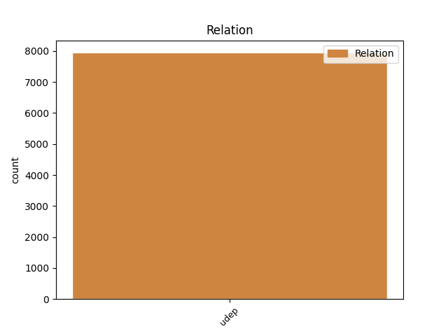
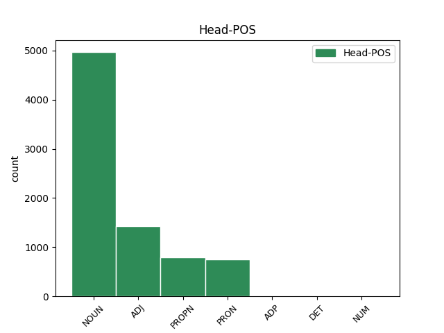
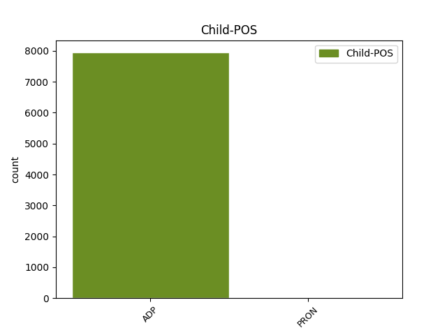

Distribution of features within this leaf



Agreement Rules sorted by frequency.
- When the dependent token is the underspecified dependency(udep) of the head token, and the head token is NOUN
1 Philips _ _ _ _ 0 _ _ _
2 erklärte _ _ _ _ 0 _ _ _
3 , _ _ _ _ 0 _ _ _
4 dass _ _ _ _ 0 _ _ _
5 die _ _ _ _ 0 _ _ _
6 Hälfte _ _ _ _ 0 _ _ _
7 der _ _ _ _ 0 _ _ _
8 CD-RW-Laufwerke _ _ _ _ 0 _ _ _
9 als _ _ _ _ 0 _ _ _
10 Einbaugeräte Gerät NOUN NN Case=Dat|Gender=Neut|Number=Sing|Person=3 0 _ _ _
11 in in ADP APPR AdpType=Prep|Case=Dat 10 udep _ _
12 Computern _ _ _ _ 0 _ _ _
13 verkauft _ _ _ _ 0 _ _ _
14 würden _ _ _ _ 0 _ _ _
15 . _ _ _ _ 0 _ _ _
1 Den _ _ _ _ 0 _ _ _
2 bislang _ _ _ _ 0 _ _ _
3 nur _ _ _ _ 0 _ _ _
4 für für ADP APPR AdpType=Prep|Case=Acc 14 udep _ _
5 Mac _ _ _ _ 0 _ _ _
6 OS _ _ _ _ 0 _ _ _
7 X _ _ _ _ 0 _ _ _
8 Server _ _ _ _ 0 _ _ _
9 , _ _ _ _ 0 _ _ _
10 Windows _ _ _ _ 0 _ _ _
11 NT _ _ _ _ 0 _ _ _
12 und _ _ _ _ 0 _ _ _
13 Linux _ _ _ _ 0 _ _ _
14 erhältlichen erhältlich ADJ ADJA Case=Acc|Degree=Pos|Gender=Masc|Number=Sing 0 _ _ _
15 QuickTime _ _ _ _ 0 _ _ _
16 Streaming _ _ _ _ 0 _ _ _
17 Server _ _ _ _ 0 _ _ _
18 gibt _ _ _ _ 0 _ _ _
19 es _ _ _ _ 0 _ _ _
20 nun _ _ _ _ 0 _ _ _
21 auch _ _ _ _ 0 _ _ _
22 für _ _ _ _ 0 _ _ _
23 Mac _ _ _ _ 0 _ _ _
24 OS _ _ _ _ 0 _ _ _
25 9.0.4 _ _ _ _ 0 _ _ _
26 . _ _ _ _ 0 _ _ _
1 Verbesserungen _ _ _ _ 0 _ _ _
2 im _ _ _ _ 0 _ _ _
3 Detail _ _ _ _ 0 _ _ _
4 gab _ _ _ _ 0 _ _ _
5 es _ _ _ _ 0 _ _ _
6 auf _ _ _ _ 0 _ _ _
7 der _ _ _ _ 0 _ _ _
8 zur _ _ _ _ 0 _ _ _
9 Zeit _ _ _ _ 0 _ _ _
10 stattfindenden _ _ _ _ 0 _ _ _
11 Apple Apple PROPN NE Case=Dat|Number=Sing|Person=3 0 _ _ _
12 Expo _ _ _ _ 0 _ _ _
13 in in ADP APPR AdpType=Prep|Case=Dat 11 udep _ _
14 Paris _ _ _ _ 0 _ _ _
15 für _ _ _ _ 0 _ _ _
16 die _ _ _ _ 0 _ _ _
17 Mac-Desktop-Linie _ _ _ _ 0 _ _ _
18 : _ _ _ _ 0 _ _ _
1 Die _ _ _ _ 0 _ _ _
2 TBW-Schreiber _ _ _ _ 0 _ _ _
3 arbeiten _ _ _ _ 0 _ _ _
4 in _ _ _ _ 0 _ _ _
5 einem ein PRON PIS Case=Dat|Gender=Masc|Number=Sing|Person=3|PronType=Ind,Neg,Tot 0 _ _ _
6 von von ADP APPR AdpType=Prep|Case=Dat 5 udep _ _
7 zwei _ _ _ _ 0 _ _ _
8 Modi _ _ _ _ 0 _ _ _
9 . _ _ _ _ 0 _ _ _
1 Nach _ _ _ _ 0 _ _ _
2 Meinung _ _ _ _ 0 _ _ _
3 von _ _ _ _ 0 _ _ _
4 Jan _ _ _ _ 0 _ _ _
5 Karlsson _ _ _ _ 0 _ _ _
6 sehen _ _ _ _ 0 _ _ _
7 wir _ _ _ _ 0 _ _ _
8 heute _ _ _ _ 0 _ _ _
9 zudem _ _ _ _ 0 _ _ _
10 erst _ _ _ _ 0 _ _ _
11 die _ _ _ _ 0 _ _ _
12 erste _ _ _ _ 0 _ _ _
13 " _ _ _ _ 0 _ _ _
14 Roboterisierungswelle _ _ _ _ 0 _ _ _
15 " _ _ _ _ 0 _ _ _
16 mit _ _ _ _ 0 _ _ _
17 der _ _ _ _ 0 _ _ _
18 Automobilindustrie _ _ _ _ 0 _ _ _
19 in _ _ _ _ 0 _ _ _
20 der _ _ _ _ 0 _ _ _
21 Vorreiterrolle _ _ _ _ 0 _ _ _
22 , _ _ _ _ 0 _ _ _
23 während _ _ _ _ 0 _ _ _
24 der _ _ _ _ 0 _ _ _
25 Automatisierungsschub _ _ _ _ 0 _ _ _
26 künftig _ _ _ _ 0 _ _ _
27 vor vor ADP APPR AdpType=Prep|Case=Dat 29 udep _ _
28 allem _ _ _ _ 0 _ _ _
29 von von ADP APPR AdpType=Prep|Case=Dat 0 _ _ _
30 der _ _ _ _ 0 _ _ _
31 sonstigen _ _ _ _ 0 _ _ _
32 produzierenden _ _ _ _ 0 _ _ _
33 aber _ _ _ _ 0 _ _ _
34 auch _ _ _ _ 0 _ _ _
35 der _ _ _ _ 0 _ _ _
36 nicht-produzierenden _ _ _ _ 0 _ _ _
37 Industrie _ _ _ _ 0 _ _ _
38 getragen _ _ _ _ 0 _ _ _
39 werde _ _ _ _ 0 _ _ _
40 . _ _ _ _ 0 _ _ _
1 Es _ _ _ _ 0 _ _ _
2 sei _ _ _ _ 0 _ _ _
3 nun _ _ _ _ 0 _ _ _
4 an _ _ _ _ 0 _ _ _
5 der _ _ _ _ 0 _ _ _
6 Zeit _ _ _ _ 0 _ _ _
7 , _ _ _ _ 0 _ _ _
8 die _ _ _ _ 0 _ _ _
9 Unsicherheiten _ _ _ _ 0 _ _ _
10 ein ein DET ART Case=Acc|Gender=Neut|Number=Sing|PronType=Art 0 _ _ _
11 für für ADP APPR AdpType=Prep|Case=Acc 10 udep _ _
12 alle _ _ _ _ 0 _ _ _
13 Mal _ _ _ _ 0 _ _ _
14 auszuräumen _ _ _ _ 0 _ _ _
15 . _ _ _ _ 0 _ _ _
1 Das _ _ _ _ 0 _ _ _
2 neu _ _ _ _ 0 _ _ _
3 eröffnete _ _ _ _ 0 _ _ _
4 Zentrum _ _ _ _ 0 _ _ _
5 ist _ _ _ _ 0 _ _ _
6 nach _ _ _ _ 0 _ _ _
7 zweien zweien NUM CARD Case=Dat|Number=Plur|NumType=Card|Person=3 0 _ _ _
8 in in ADP APPR AdpType=Prep|Case=Dat 7 udep _ _
9 den _ _ _ _ 0 _ _ _
10 USA _ _ _ _ 0 _ _ _
11 und _ _ _ _ 0 _ _ _
12 einem _ _ _ _ 0 _ _ _
13 in _ _ _ _ 0 _ _ _
14 Korea _ _ _ _ 0 _ _ _
15 das _ _ _ _ 0 _ _ _
16 weltweit _ _ _ _ 0 _ _ _
17 vierte _ _ _ _ 0 _ _ _
18 Web- _ _ _ _ 0 _ _ _
19 und _ _ _ _ 0 _ _ _
20 Application-Hosting-Center _ _ _ _ 0 _ _ _
21 , _ _ _ _ 0 _ _ _
22 das _ _ _ _ 0 _ _ _
23 Intel _ _ _ _ 0 _ _ _
24 Online _ _ _ _ 0 _ _ _
25 Services _ _ _ _ 0 _ _ _
26 eröffnet _ _ _ _ 0 _ _ _
27 . _ _ _ _ 0 _ _ _
Disagree Examples:
1 Hinter _ _ _ _ 0 _ _ _
2 der _ _ _ _ 0 _ _ _
3 neuen _ _ _ _ 0 _ _ _
4 Firma _ _ _ _ 0 _ _ _
5 steht _ _ _ _ 0 _ _ _
6 unter unter ADP APPR AdpType=Prep|Case=Dat 8 udep _ _
7 anderem _ _ _ _ 0 _ _ _
8 Lucent Lucent PROPN NE Case=Nom|Number=Sing|Person=3 0 _ _ _
9 Technologies _ _ _ _ 0 _ _ _
10 , _ _ _ _ 0 _ _ _
11 einer _ _ _ _ 0 _ _ _
12 der _ _ _ _ 0 _ _ _
13 größten _ _ _ _ 0 _ _ _
14 Anbieter _ _ _ _ 0 _ _ _
15 von _ _ _ _ 0 _ _ _
16 Equipment _ _ _ _ 0 _ _ _
17 für _ _ _ _ 0 _ _ _
18 Netzwerke _ _ _ _ 0 _ _ _
19 und _ _ _ _ 0 _ _ _
20 Telekommunikation _ _ _ _ 0 _ _ _
21 . _ _ _ _ 0 _ _ _
1 Ob _ _ _ _ 0 _ _ _
2 die _ _ _ _ 0 _ _ _
3 im im ADP APPRART AdpType=Prep|Case=Dat|PronType=Art 5 udep _ _
4 Internet _ _ _ _ 0 _ _ _
5 gesammelten sammeln ADJ ADJA Case=Nom|Degree=Pos|Gender=Masc|Number=Plur 0 _ _ _
6 Ausdrücke _ _ _ _ 0 _ _ _
7 auch _ _ _ _ 0 _ _ _
8 als _ _ _ _ 0 _ _ _
9 Ergänzungslieferung _ _ _ _ 0 _ _ _
10 für _ _ _ _ 0 _ _ _
11 den _ _ _ _ 0 _ _ _
12 gedruckten _ _ _ _ 0 _ _ _
13 Duden _ _ _ _ 0 _ _ _
14 erscheinen _ _ _ _ 0 _ _ _
15 oder _ _ _ _ 0 _ _ _
16 einfach _ _ _ _ 0 _ _ _
17 in _ _ _ _ 0 _ _ _
18 eine _ _ _ _ 0 _ _ _
19 kommende _ _ _ _ 0 _ _ _
20 Auflage _ _ _ _ 0 _ _ _
21 eingearbeitet _ _ _ _ 0 _ _ _
22 werden _ _ _ _ 0 _ _ _
23 , _ _ _ _ 0 _ _ _
24 ist _ _ _ _ 0 _ _ _
25 laut _ _ _ _ 0 _ _ _
26 Bianca _ _ _ _ 0 _ _ _
27 Geist _ _ _ _ 0 _ _ _
28 noch _ _ _ _ 0 _ _ _
29 nicht _ _ _ _ 0 _ _ _
30 entschieden _ _ _ _ 0 _ _ _
31 . _ _ _ _ 0 _ _ _
1 Die _ _ _ _ 0 _ _ _
2 Bonner _ _ _ _ 0 _ _ _
3 Staatsanwaltschaft _ _ _ _ 0 _ _ _
4 nahm _ _ _ _ 0 _ _ _
5 wegen _ _ _ _ 0 _ _ _
6 des _ _ _ _ 0 _ _ _
7 Verdachts Verdacht NOUN NN Case=Gen|Gender=Masc|Number=Sing|Person=3 0 _ _ _
8 auf auf ADP APPR AdpType=Prep|Case=Acc 7 udep _ _
9 Kapitalanlagebetrug _ _ _ _ 0 _ _ _
10 Ermittlungen _ _ _ _ 0 _ _ _
11 gegen _ _ _ _ 0 _ _ _
12 mehrere _ _ _ _ 0 _ _ _
13 Vorstände _ _ _ _ 0 _ _ _
14 auf _ _ _ _ 0 _ _ _
15 . _ _ _ _ 0 _ _ _
1 Ausbau _ _ _ _ 0 _ _ _
2 des _ _ _ _ 0 _ _ _
3 Kabelnetzes Kabelnetz NOUN NN Case=Gen|Gender=Neut|Number=Sing|Person=3 0 _ _ _
4 in in ADP APPR AdpType=Prep|Case=Dat 3 udep _ _
5 Baden-Württemberg _ _ _ _ 0 _ _ _
6 für _ _ _ _ 0 _ _ _
7 Internet-Zugang _ _ _ _ 0 _ _ _
1 Das _ _ _ _ 0 _ _ _
2 US-amerikanische _ _ _ _ 0 _ _ _
3 Unternehmen _ _ _ _ 0 _ _ _
4 Callahan _ _ _ _ 0 _ _ _
5 will _ _ _ _ 0 _ _ _
6 den _ _ _ _ 0 _ _ _
7 Kauf _ _ _ _ 0 _ _ _
8 des _ _ _ _ 0 _ _ _
9 TV-Kabelnetzes Kabelnetz NOUN NN Case=Gen|Gender=Neut|Number=Sing|Person=3 0 _ _ _
10 in in ADP APPR AdpType=Prep|Case=Dat 9 udep _ _
11 Baden-Württemberg _ _ _ _ 0 _ _ _
12 in _ _ _ _ 0 _ _ _
13 wenigen _ _ _ _ 0 _ _ _
14 Wochen _ _ _ _ 0 _ _ _
15 unter _ _ _ _ 0 _ _ _
16 Dach _ _ _ _ 0 _ _ _
17 und _ _ _ _ 0 _ _ _
18 Fach _ _ _ _ 0 _ _ _
19 bringen _ _ _ _ 0 _ _ _
20 . _ _ _ _ 0 _ _ _